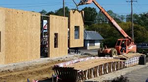

External Envelope Design
The external envelope of Kelham Rise is designed to meet performance, safety, and environmental standards for a high-rise, mixed-use building. The envelope includes walls, roofing, glazing, and insulation systems that work together to create a well-sealed, energy-efficient structure.
Wall System Design
We propose a prefabricated insulated panel system (e.g., SFS or SIPs) with rainscreen cladding mounted over ventilated cavities. This system offers excellent airtightness and thermal performance while allowing faster on-site installation using panelized façades.

Glazing & Openings
The building will feature triple-glazed, aluminium-framed windows with low-e coating and argon gas filling, ensuring high thermal insulation. Solar shading fins or brise-soleil will be installed on the south and west elevations to control solar gain.
Roof Design (Green Roof)
The flat roof will include a semi-intensive green roof system with a waterproof membrane, vapour barrier, and root barrier. The lightweight growing medium will support sedum planting, which contributes to reducing stormwater runoff and urban heat island effect.
Envelope Performance Targets
This external envelope system combines high performance and buildability. Its prefabricated approach shortens site time while achieving thermal, acoustic, and weatherproofing standards. It sets the foundation for integrating smart, low-carbon innovations throughout the building.
Innovation
Innovation is central to the Kelham Rise vision. We aim to deliver a smarter, faster, greener building by applying modern construction methods and sustainable technologies. This includes prefabricated and modular systems, renewable energy features, and intelligent detailing.
Prefabricated & Modular Systems
Panelized facades, unitized window-wall systems, and pre-fabricated roof modules will speed up installation, improve safety with fewer on-site workers, and enhance quality with factory precision.
Renewable and Sustainable Features
The building will incorporate renewable energy systems, including solar panels and smart building technologies. The design will reduce reliance on grid electricity and support BREEAM certification with a target for "Excellent" rating through smart planning.
Construction Innovation
Digital BIM coordination will optimize envelope, structure, and services integration. Off-site fabrication and just-in-time delivery will ensure efficiency and minimize waste. On-site monitoring apps will facilitate snagging and quality assurance.
Resilience and Long-Term Benefits
The building will be designed for climate adaptation, reducing cooling loads and flood risks. Low-maintenance materials will reduce operating costs, ensuring the building's long-term performance.